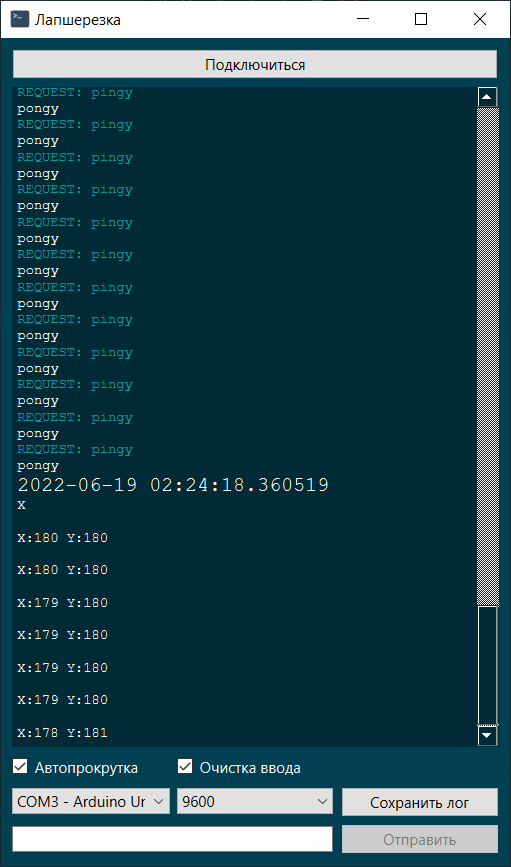

LAPSHEREZKA

Is a program for reading and sending messages to microcontrollers.
Or, in two words - "port monitor"
Someday I'll upload the binary here
But now, let me tell you about its features:
1) Sexy design (in my humble opinion)
2) Amazing name
3) (not relevant) can monitor ports